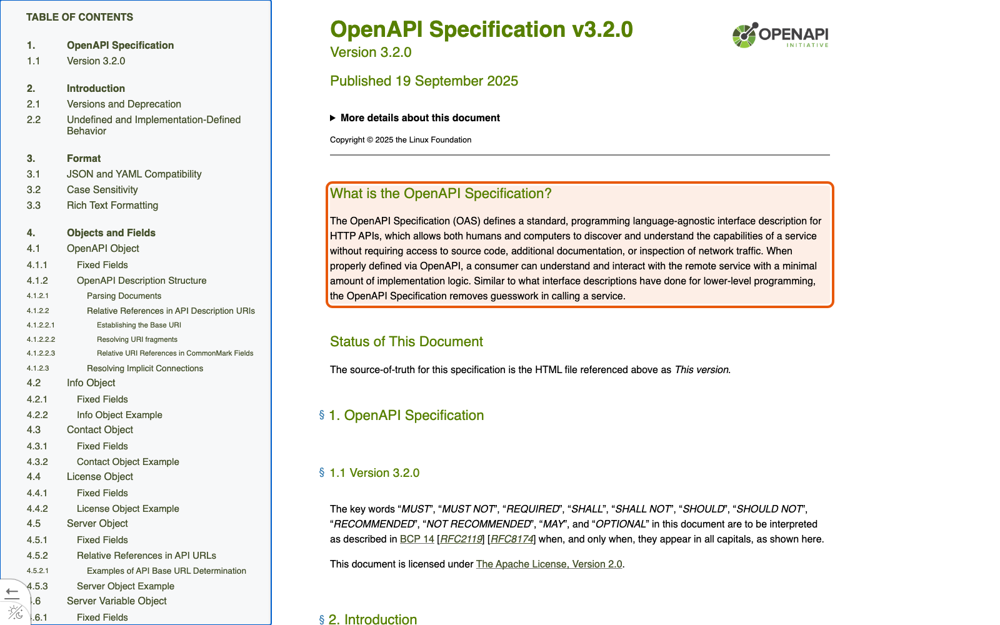
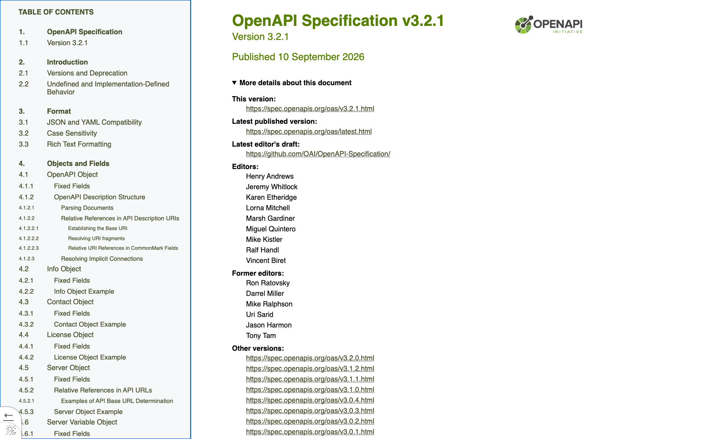

Справочник «Стандартизация HTTP API» · модуль 3 · OpenAPI
Глава 3.1
Зачем
машиночитаемое описание
Документацию можно написать словами в README — и через месяц она разойдётся с кодом. В этой главе разберём, как выглядит это расхождение, что предлагает взамен OpenAPI, кто читает такое описание кроме человека и как сделать, чтобы файл описания не отставал от реализации.
- Категория
- Описание контракта
- Уровень
- Базовый
- Связанные главы
- 3.2 Разделы документа · 3.3 FastAPI и OpenAPI · 6.4 CI
- Зачем это знать
- Чтобы описание API читали инструменты, а не только люди, и чтобы оно не устаревало
§1Как README расходится с кодом
Ситуация знакома любому, кто подключался к чужому API. В README написано: чтобы создать обращение, отправьте POST /tickets с полем title. Вы отправляете — получаете 422. Выясняется, что месяц назад добавили обязательное поле description, а README не поправили.
POST /tickets- тело:
{"title": "…"} - ответ:
200 OK
POST /api/v1/tickets- тело:
titleиdescription, оба обязательны - ответ:
201 CreatedсLocation
Расхождение документации и реализации, которое накапливается со временем, потому что документация обновляется вручную и не проверяется автоматически.
Беда не в том, что кто-то поленился. Беда в том, что у README нет способа узнать о коде: это отдельный текст, который живёт своей жизнью. Пока связь между описанием и реализацией держится на дисциплине, она рвётся.
§2Что такое OpenAPI
OpenAPI Specification — стандартный формат описания HTTP API. Это не программа и не библиотека: это договорённость, как записать контракт в файле JSON или YAML так, чтобы его понимали и человек, и инструменты.
«The OpenAPI Specification (OAS) defines a standard, programming language-agnostic interface description for HTTP APIs, which allows both humans and computers to discover and understand the capabilities of a service without requiring access to source code, additional documentation, or inspection of network traffic.»
Перевод. OpenAPI Specification определяет стандартное, не зависящее от языка программирования описание интерфейса HTTP API. Оно позволяет и людям, и программам узнать возможности сервиса без доступа к исходному коду, дополнительной документации и без анализа сетевого трафика.
Ключевые слова здесь — «не зависящее от языка» и «и людям, и программам». Описание учебного сервиса собирается из кода на Python, но читать его будут инструменты, написанные на TypeScript и Go, и разработчик клиента, который Python не знает вовсе.

§3Редакции: 3.1 и 3.2
У спецификации есть собственная версия, и её не нужно путать с версией вашего API. На сентябрь 2026 года последняя опубликованная редакция — 3.2.1 от 10 сентября 2026 года; минорная версия 3.2 вышла 19 сентября 2025 года.

spec.openapis.org/oas/latest.html всегда ведёт на актуальный текст — по нему удобно проверять, не вышла ли новая версия.Инструменты догоняют спецификацию не сразу. FastAPI версии 0.115, на которой собран учебный сервис, генерирует описание в редакции 3.1.0:
{
"openapi": "3.1.0",
"info": { "title": "Service Desk API", "version": "1.1.0", … },
"paths": { … }
}Это не ошибка и не повод менять фреймворк. Редакция 3.1 полностью пригодна для работы, её понимают все инструменты справочника. Важно другое: не путать поле openapi (редакция формата) с полем info.version (версия вашего контракта). Первое здесь 3.1.0, второе — 1.1.0, и меняются они независимо.
§4Кто читает описание
Главная выгода машиночитаемого описания в том, что с ним работает не только человек. Один файл обслуживает целую цепочку инструментов.
operationId.SDKОбратите внимание, что все шесть строк — это работа, которую иначе пришлось бы делать руками и заново после каждого изменения. Именно поэтому крупные компании публикуют описание своего API открыто: GitHub держит его в отдельном репозитории и, как сказано в README, использует для проверки запросов к своему API и для контрактных тестов.
§5Описание из кода
Есть два пути получить файл описания. Первый — писать его руками и по нему реализовывать сервис: так делают, когда контракт согласуют раньше, чем начинают разработку. Второй — генерировать описание из кода: так делает FastAPI и так устроен учебный проект.
- контракт обсуждают и утверждают до кода;
- клиентская команда начинает сразу;
- нужен навык писать OpenAPI руками;
- так работает Zalando: «API First».
- источник истины — код и схемы;
- описание не забывают обновить;
- легко «нечаянно» изменить контракт;
- так работает учебный проект.
У второго пути есть слабое место: раз описание рождается из кода, любое изменение кода немедленно меняет контракт. Именно поэтому в проекте есть выгрузка описания в файл и проверка, что файл совпадает с кодом, — о ней следующий параграф.
python scripts/export_openapi.py
written openapi/openapi.json written openapi/openapi.yaml
§6Проверка против расхождения
Файлы в папке openapi/ — это снимок контракта, который лежит в репозитории и виден в истории изменений. Чтобы снимок не отстал от кода, у скрипта есть режим проверки.
python scripts/export_openapi.py --check
Команда собирает описание из кода и сравнивает с файлами в репозитории. Совпало — молчит и завершается успешно. Разошлось — печатает, какой файл устарел, и завершается с ошибкой:
openapi/openapi.json is outdated: run python scripts/export_openapi.py
Эта же команда стоит в CI между тестами и линтером. Изменение, в котором описание не обновлено, не попадёт в основную ветку. Так пропадает целый класс проблем: описание в репозитории всегда соответствует тому, что сервис на самом деле отвечает.
README расходится с кодом молча. Выгруженное описание расходится громко: сборка падает и называет файл.
§7Частые ошибки
"openapi": "3.1.0" — редакция формата описания. Версия контракта лежит в info.version.§8Проверьте себя
- Что такое documentation drift и почему README подвержен ему сильнее, чем выгруженное описание?
- Какая редакция OpenAPI указана в описании учебного сервиса и почему она не совпадает с последней опубликованной?
- Назовите четыре инструмента, которые читают описание API, и скажите, что делает каждый.
- Измените в коде описание любой операции, не выгружая файл, и выполните
--check. Что произойдёт? - Чем «сначала описание» отличается от «описание из кода» и какие риски у каждого пути?
формат описания HTTP APIJSON или YAMLдля людей и инструментовopenapi: 3.1.0 — форматinfo.version: 1.1.0 — контрактexport_openapi.pyexport_openapi.py --checkSwagger UI · ReDocSpectral · oasdiffгенераторы · mockСправочник «Стандартизация HTTP API» · модуль 3 · глава 3.1Макаров Максим Николаевич